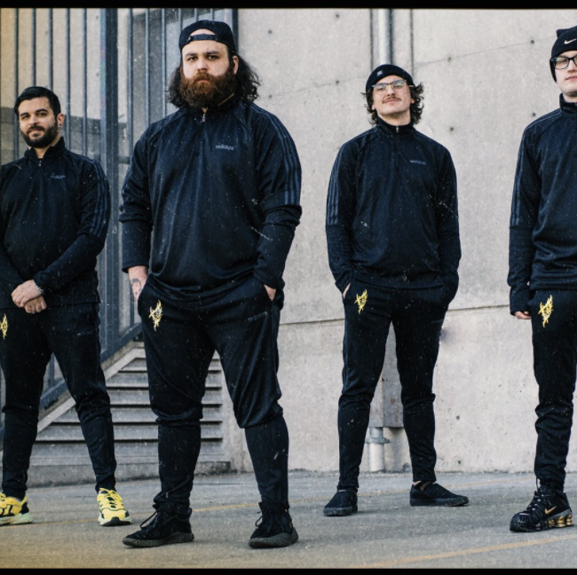
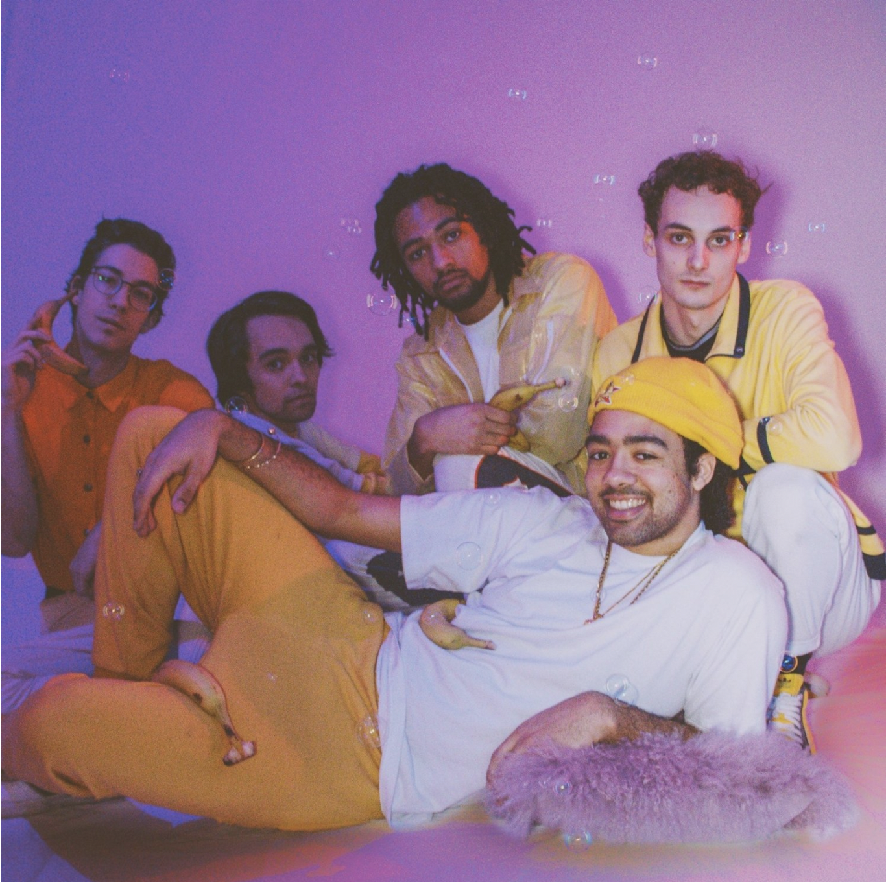
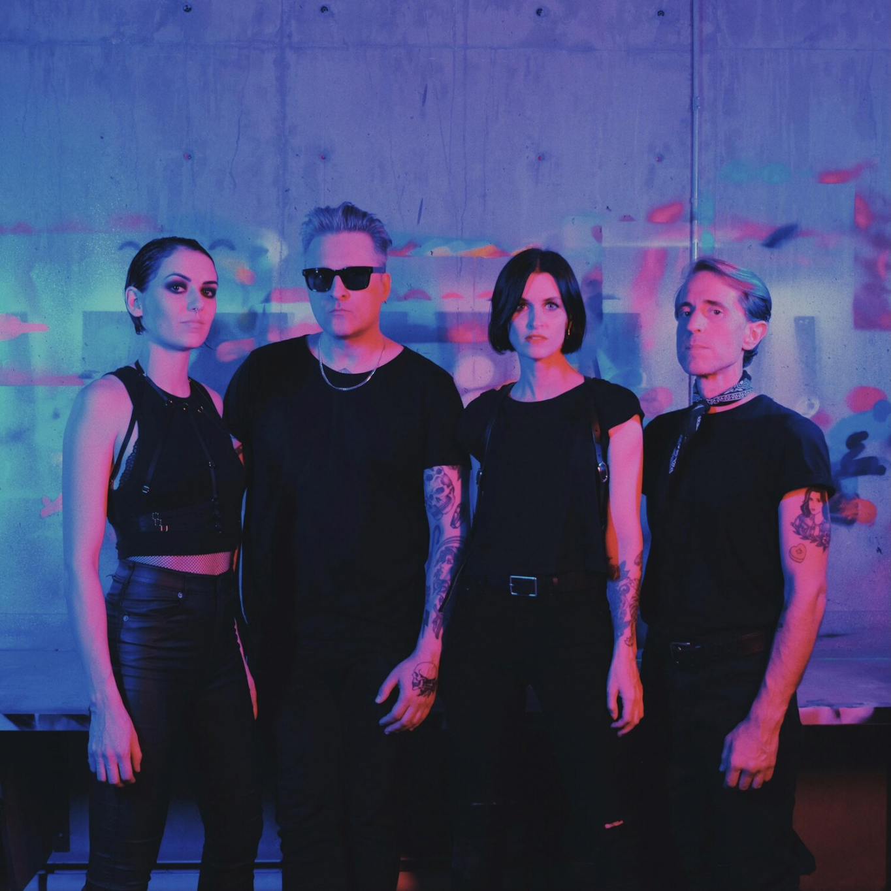

Born in the midst of the pandemic and featuring seasoned veterans of the Vancouver metal scene, Carcosa play a punishing and technically impressive brand of deathcore inspired by the likes of The Acacia Strain and Brand of Sacrifice. The band dropped
their first full length record Anthology this year and have already amassed a faithful following thanks to their savvy use of platforms like YouTube and Tik Tok. This is a group that is truly on the rise and we are honored to feature
them as the first metal band on the podcast.


SHWEY
Born from the DIY music community in East Vancouver, Schwey are an indie funk unit that have developed a reputation within the city’s underground as a high energy and unpredictable live act. Drawing inspiration from genre greats like Parliament Funkadelic
and the Ohio Players along with contemporary acts like Vulfpeck, Schwey pull from hip hop, R&B, and electro pop to create a sound that’s entirely their own. Schwey dropped their sophomore record Schwey 2: Cyber Soul in May 2021
which sees the group take an exciting new musical direction through the incorporation of futuristic synths, electronic beats, and just the right amount of vocal fx.
ACTORS
This episode we’re speaking with Jason Corbett and Adam Fink of the darkwave/goth rock group ACTORS. Jason is a producer and songwriter who has worked with a number of local and Canadian bands including electro dance act Gang Signs, glam rocker Art D’Ecco,
and dream pop band Frankiie at his studio Jacknife Sound. Adam is the drummer for ACTORS and has lent his talents to a number of other local acts including Jody Glenham and the Dreamers, Gang Signs, and Blue J.

SAM TUDOR
Sam Tudor is a vocalist, songwriter, engineer, and producer who has been releasing music under his own name since 2014. His project is a DIY collective effort featuring an impressive roster of session and touring musicians from bands including Bernice,
U.S Girls, Tasseomancy, Omhouse, and Charlotte Cornfield. On his latest record Two Half Words, Sam lyrically explores memorable and challenging experiences from the last three years of his life while incorporating a combination
of electronic and organic instrumentation resulting in his most experimental and atmospheric release to date.
NADUH
NADUH are a 5 piece femme hip hop supergroup composed of Tee (aka Taraneh), Jenny Lea of I M U R, Rosa Alcantara of Off Topic, Giorgi Holiday (aka Giorgi), and Larisa Marie. Fashioning themselves as a “spicier Spice Girls” and “the female BROCKHAMPTON”,
NADUH bring undeniable energy on the three singles they have released to date, display an attention grabbing visual flair, and seem poised to become the next big thing in Western Canadian hip hop.